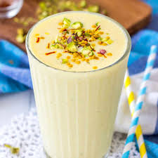

MANGO LASSI

Mango Lassi is a fruity variation of the popular classic
sweet Lassi - a summer drink made with yogurt,
water or milk, sugar and cardamoms.
INGREDIENTS
- 2 mangos - peeled, seeded and diced
- 2 cups plain yogurt
- 0.5 cup white sugar
- 1 cup ice
STEPS
- In a blender, combine mangos, yogurt, sugar and ice. Blend until smooth.
- Pour into glasses and serve.